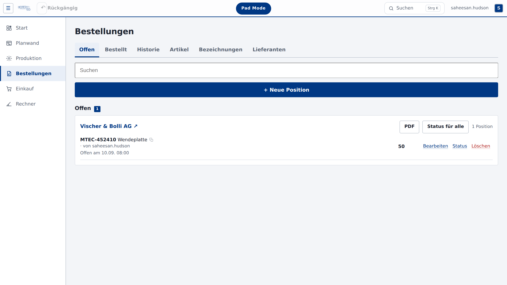
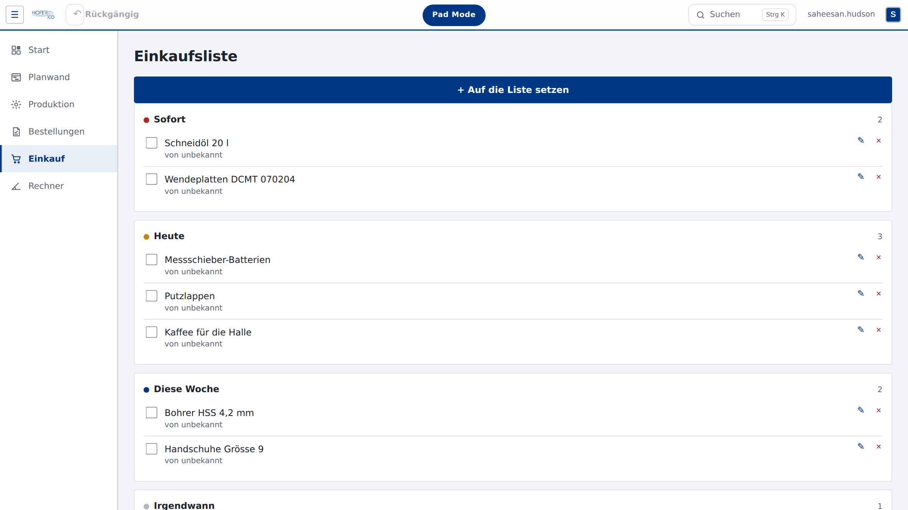
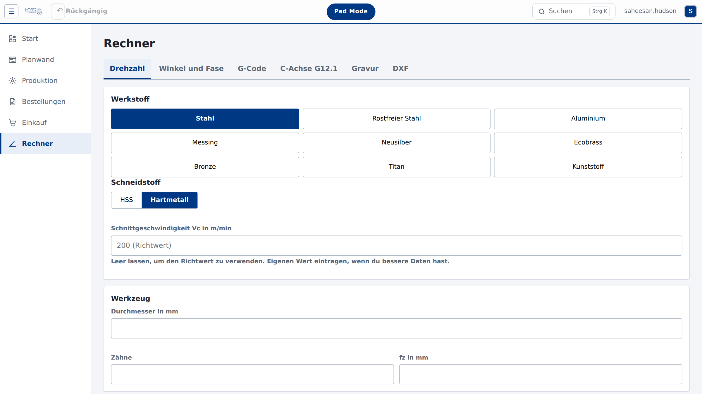
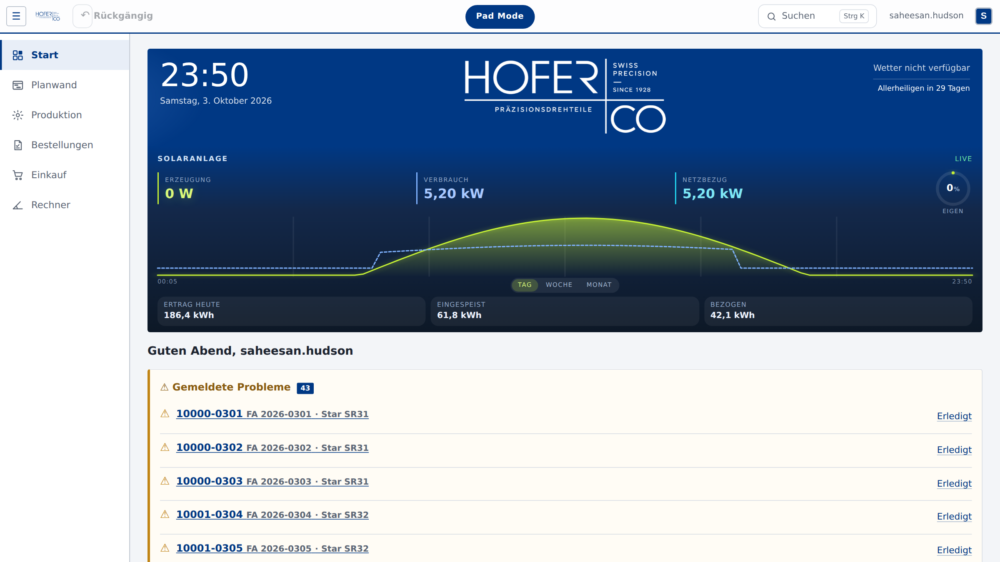

LOHN-AMMANNSEGG
47.17° N · 7.53° O · SOLOTHURN
SEIT 1900
1928Gustav Hofer gründet
19973. Generation
20164. Generation
Vom Prototyp bis zur Serie
0+CNC-Drehautomaten
3 – 42Millimeter Durchmesser
4.Generation Familie Hofer
Aber die Planung?
Tornos M3 ab Mo?wer hat das geändert…
10008 Material fehlt!bitte Büro anrufen
Stk. 340? 430?Zettel in der Halle
Zeichnung wo??Ordner 3 oder 4
Rüsten Di oder Mi?Whiteboard
Und immer die Frage:
Was läuft gerade?
K-2001?
K-2002?
L-1003?
L-1005?
L-1007?
Darum haben wir gebaut:
Hofer Tool
Planung · Produktion · Pad Mode
Planwand
Ziehen. Fertig.
1Auftrag packen
2Ziehen
3Loslassen
✓Rest rückt nach
hofertool / planwand
Suche über alles
Jeder Auftrag. Sofort.
Strg
+
K
10007
hofertool / suche
Pad Mode
An der Maschine.
1Maschine antippen
2Stückzahl eingeben
✓Büro sieht es sofort
Unterwegs
Alles auch auf dem Handy.




Bestellungen
Einkauf
Rechner
Dokumente
Alles an einem Ort.
Hofer Tool
Präzision, jetzt auch in der Planung.